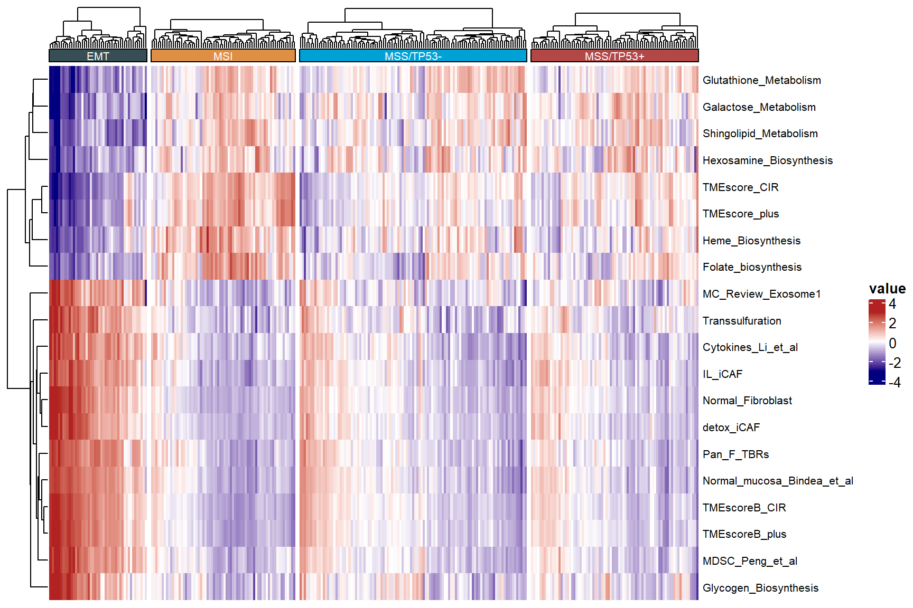
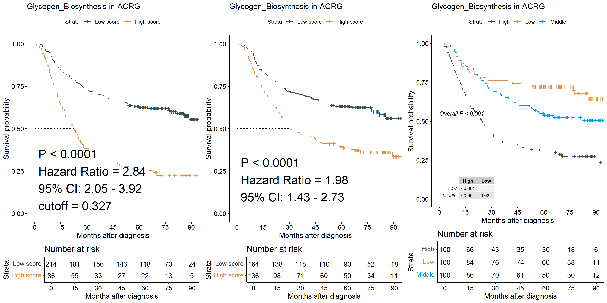
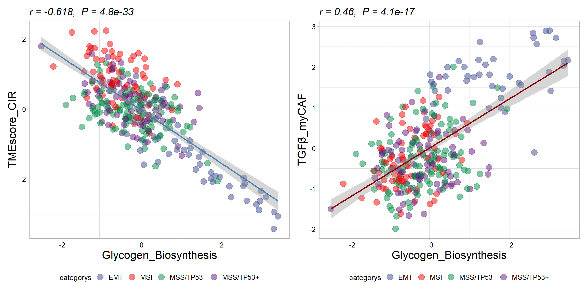
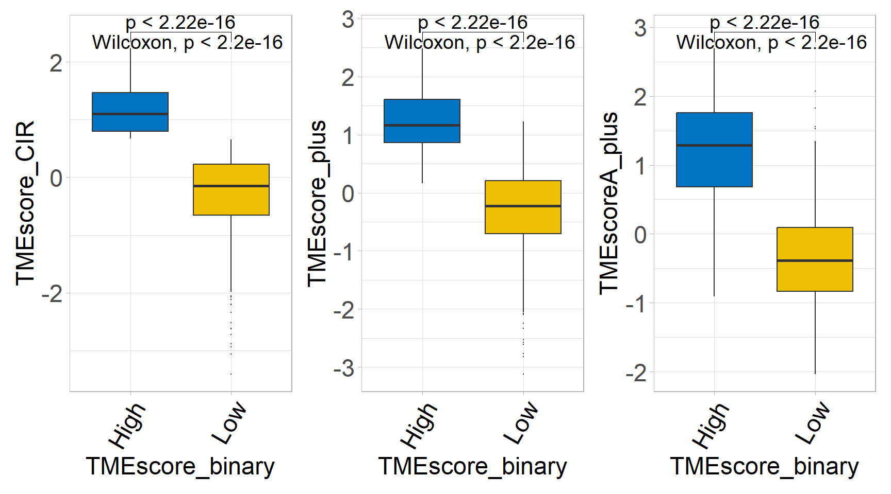

Chapter 6 Signature Score and Relevant phenotypes
6.2 Downloading data for example
Obtaining data set from GEO Gastric cancer: GSE62254 using GEOquery R package.
if (!requireNamespace("GEOquery", quietly = TRUE)) BiocManager::install("GEOquery")
library("GEOquery")
# NOTE: This process may take a few minutes which depends on the internet connection speed. Please wait for its completion.
eset_geo <- getGEO(GEO = "GSE62254", getGPL = F, destdir = "./")
eset <- eset_geo[[1]]
eset <- exprs(eset)
eset[1:5,1:5]## GSM1523727 GSM1523728 GSM1523729 GSM1523744 GSM1523745
## 1007_s_at 3.2176645 3.0624323 3.0279131 2.921683 2.8456013
## 1053_at 2.4050109 2.4394879 2.2442708 2.345916 2.4328582
## 117_at 1.4933412 1.8067380 1.5959665 1.839822 1.8326058
## 121_at 2.1965561 2.2812181 2.1865556 2.258599 2.1874363
## 1255_g_at 0.8698382 0.9502466 0.8125414 1.012860 0.94419936.3 Gene Annotation
Annotation of genes in the expression matrix and removal of duplicate genes.
## # A tibble: 6 × 2
## probe_id symbol
## <fct> <fct>
## 1 1007_s_at MIR4640
## 2 1053_at RFC2
## 3 117_at HSPA6
## 4 121_at PAX8
## 5 1255_g_at GUCA1A
## 6 1294_at MIR5193# Conduct gene annotation using `anno_hug133plus2` file; If identical gene symbols exists, these genes would be ordered by the mean expression levels. The gene symbol with highest mean expression level is selected and remove others.
eset<-anno_eset(eset = eset,
annotation = anno_hug133plus2,
symbol = "symbol",
probe = "probe_id",
method = "mean")
eset[1:5, 1:3]## GSM1523727 GSM1523728 GSM1523729
## SH3KBP1 4.327974 4.316195 4.351425
## RPL41 4.246149 4.246808 4.257940
## EEF1A1 4.293762 4.291038 4.262199
## COX2 4.250288 4.283714 4.270508
## LOC101928826 4.219303 4.219670 4.2132526.4 Estimation of signatures
sig_tme<-calculate_sig_score(pdata = NULL,
eset = eset,
signature = signature_collection,
method = "pca",
mini_gene_count = 2)
sig_tme <- t(column_to_rownames(sig_tme, var = "ID"))
sig_tme[1:5, 1:3]## GSM1523727 GSM1523728 GSM1523729
## CD_8_T_effector -2.5513794 0.7789141 -2.1770675
## DDR -0.8747614 0.7425162 -1.3272054
## APM 1.1098368 2.1988688 -0.9516419
## Immune_Checkpoint -2.3701787 0.9455120 -1.4844104
## CellCycle_Reg 0.1063358 0.7583302 -0.36497956.5 Combining score data and phenotype data
## ID ProjectID Technology platform Gender Age RFS_time
## 71 GSM1523727 GSE62254 Affymetrix HG-U133_Plus_2 M 67 3.97
## 72 GSM1523728 GSE62254 Affymetrix HG-U133_Plus_2 F 68 4.03
## 73 GSM1523729 GSE62254 Affymetrix HG-U133_Plus_2 F 42 74.97
## 74 GSM1523744 GSE62254 Affymetrix HG-U133_Plus_2 M 69 89.77
## 75 GSM1523745 GSE62254 Affymetrix HG-U133_Plus_2 M 68 84.60
## 76 GSM1523746 GSE62254 Affymetrix HG-U133_Plus_2 M 56 5.77
## RFS_status OS_time OS_status Lauren Differtiation AJCC_Stage_confuse
## 71 NA 88.73 0 Intestinal MD 2
## 72 NA 88.23 0 Intestinal PD 2
## 73 0 88.23 0 Diffuse PD 2
## 74 0 105.70 0 Diffuse PD 2
## 75 0 105.53 0 Diffuse PD 3
## 76 1 25.50 1 Mixed PD 2
## T_stage N_stage M_stage Lymph_node_examined Positive_lymph_nodes
## 71 2 1 0 20 3
## 72 2 1 0 40 1
## 73 2 1 0 21 1
## 74 2 1 0 24 3
## 75 3 2 0 52 11
## 76 2 1 0 22 5
## Revisedlocation MSI EBV Hpylori Subtype TP53mutated B.cells.naive
## 71 Body 1 0 NA MSI 0 0.006611704
## 72 Body 1 NA NA MSI 0 0.000000000
## 73 Antrum 0 0 0 MSS/TP53+ 1 0.003306927
## 74 Antrum 1 0 1 MSI 0 0.000000000
## 75 Antrum 0 0 NA MSS/TP53- 0 0.000000000
## 76 Antrum 0 0 0 MSS/TP53- 0 0.013619480
## B.cells.memory Plasma.cells T.cells.CD8 T.cells.CD4.naive
## 71 0.014570868 0.17555729 0.05712737 0
## 72 0.036202099 0.08523233 0.05336971 0
## 73 0.020935673 0.10489546 0.00000000 0
## 74 0.072648177 0.08755997 0.03465107 0
## 75 0.009798381 0.12251030 0.00000000 0
## 76 0.012784581 0.15602714 0.00000000 0
## T.cells.CD4.memory.resting T.cells.CD4.memory.activated
## 71 0.1439895 0.025159835
## 72 0.1250515 0.049617381
## 73 0.1849220 0.008407981
## 74 0.1396439 0.055268600
## 75 0.1916398 0.036578672
## 76 0.1905921 0.008992440
## T.cells.follicular.helper T.cells.regulatory..Tregs. T.cells.gamma.delta
## 71 0.02453957 0 0.00000000
## 72 0.05318251 0 0.00000000
## 73 0.05098080 0 0.03714459
## 74 0.07825130 0 0.00000000
## 75 0.02223859 0 0.02657259
## 76 0.04740728 0 0.04283296
## NK.cells.resting NK.cells.activated Monocytes Macrophages.M0 Macrophages.M1
## 71 0.000000000 0.049325657 0 0.03865693 0.06910287
## 72 0.000000000 0.081481924 0 0.07370723 0.08016443
## 73 0.000000000 0.025252673 0 0.00000000 0.06161940
## 74 0.000000000 0.016121853 0 0.08866391 0.08173804
## 75 0.001738259 0.006267907 0 0.15255902 0.07161270
## 76 0.000000000 0.052117471 0 0.10298038 0.03246627
## Macrophages.M2 Dendritic.cells.resting Dendritic.cells.activated
## 71 0.1829208 0.0000000 0.022904531
## 72 0.1320919 0.0000000 0.060491149
## 73 0.1170839 0.1171129 0.032385282
## 74 0.1441202 0.0000000 0.060937005
## 75 0.1919279 0.0000000 0.006087801
## 76 0.1093805 0.0000000 0.023914527
## Mast.cells.resting Mast.cells.activated Eosinophils Neutrophils.x P.value
## 71 0.069286038 0.000000000 0.006315889 0.11393115 0
## 72 0.003322764 0.005197745 0.056141443 0.10474585 0
## 73 0.052571970 0.000000000 0.104493538 0.07888690 0
## 74 0.012494201 0.006833953 0.050435095 0.07063272 0
## 75 0.000000000 0.033928747 0.017164438 0.10937487 0
## 76 0.014373257 0.002764802 0.115772442 0.07397439 0
## Pearson.Correlation RMSE T.cells CD8.T.cells Cytotoxic.lymphocytes
## 71 0.3359926 0.9415173 -0.9275804 0.8492914 -1.1005262
## 72 0.4793134 0.8827802 -0.5306279 -0.2017907 0.1858499
## 73 0.3638005 0.9308186 -0.9566316 0.2411951 -0.8800338
## 74 0.3569989 0.9332100 -1.0464552 -0.5771205 -0.5619472
## 75 0.4226987 0.9062522 -0.6796120 0.6670229 -0.3361456
## 76 0.4113346 0.9112588 -0.6978480 -1.1110102 -0.7631710
## NK.cells B.lineage Monocytic.lineage Myeloid.dendritic.cells
## 71 -0.083623737 -0.54974243 -1.40389061 -0.7589211
## 72 0.156167025 -0.33750363 -0.03696397 -0.6393975
## 73 0.003538847 0.01597566 -0.67105808 0.7452174
## 74 -0.010774923 -0.56740438 0.06877240 -0.2511140
## 75 -0.028429092 -0.73180429 0.21574792 -0.1165082
## 76 0.466964699 0.15583392 -0.97524359 -0.7448360
## Neutrophils.y Endothelial.cells Fibroblasts StromalScore ImmuneScore
## 71 -0.9527759 -1.42753593 -1.22754105 -1.8047694 -1.3347047
## 72 0.5640500 -0.17320689 0.41586717 0.1825225 0.1950604
## 73 -0.3415288 -0.25784297 0.04110246 -0.1863425 -0.4960305
## 74 -1.2984378 -1.05394707 0.00743277 -0.2731398 -0.7950682
## 75 0.4227674 0.03025664 0.32245183 0.3165798 -0.2416774
## 76 -0.4411653 -0.29582293 -0.68833740 -0.9119449 -0.8475150
## ESTIMATEScore TumorPurity ProjectID2 TMEscoreA TMEscoreB TMEscore
## 71 -1.70632719 1.1687573 GSE62254 -1.06110812 -1.270222413 0.60585688
## 72 0.20292720 NA GSE62254 1.14698153 -0.333585646 0.73717229
## 73 -0.35721073 -1.3859061 GSE62254 -0.89026369 -0.007906066 -0.35452887
## 74 -0.55795758 -0.9855180 GSE62254 -0.01116022 -0.984841623 0.79880007
## 75 0.05885805 NA GSE62254 -0.27102383 -0.017592784 -0.09554256
## 76 -0.94967710 -0.2162267 GSE62254 -0.94526260 0.161818627 -0.51527214
## TMEscore_binary
## 71 Low
## 72 High
## 73 Low
## 74 High
## 75 Low
## 76 Low6.6 Identifying features associated with survival
res<- batch_surv(pdata = input,
time = "OS_time",
status = "OS_status",
variable = colnames(input)[69:ncol(input)])
head(res)## # A tibble: 6 × 5
## ID P HR CI_low_0.95 CI_up_0.95
## <chr> <dbl> <dbl> <dbl> <dbl>
## 1 Folate_biosynthesis 1.00e-10 0.579 0.490 0.683
## 2 TMEscore_CIR 1.32e- 9 0.640 0.554 0.739
## 3 Glycogen_Biosynthesis 3.24e- 9 1.52 1.32 1.74
## 4 Pan_F_TBRs 6.33e- 9 1.55 1.34 1.80
## 5 TMEscoreB_CIR 7.17e- 9 1.52 1.32 1.75
## 6 TMEscore_plus 8.08e- 9 0.638 0.547 0.743Use forest plots sig_forest to show the most relevant variables to overall survival

6.7 Visulization using heatmap
Relationship between Signatures and molecular typing.
Heatmap visualisation using IOBR’s sig_heatmap
p2 <- sig_heatmap(input = input,
features = res$ID[1:20],
group = "Subtype",
palette_group = "jama",
palette = 6,
path = "result" )
6.8 Focus on target signatures
p1 <- sig_box(data = input,
signature = "Glycogen_Biosynthesis",
variable = "Subtype",
jitter = FALSE,
cols = NULL,
palette = "jama",
show_pvalue = TRUE,
size_of_pvalue = 5,
hjust = 1,
angle_x_text = 60,
size_of_font = 8)## # A tibble: 6 × 8
## .y. group1 group2 p p.adj p.format p.signif method
## <chr> <chr> <chr> <dbl> <dbl> <chr> <chr> <chr>
## 1 signature EMT MSI 5.39e-15 3.20e-14 5.4e-15 **** Wilcoxon
## 2 signature EMT MSS/TP53- 5.53e-13 2.8 e-12 5.5e-13 **** Wilcoxon
## 3 signature EMT MSS/TP53+ 1.90e-12 7.6 e-12 1.9e-12 **** Wilcoxon
## 4 signature MSI MSS/TP53- 1.14e- 3 3.4 e- 3 0.0011 ** Wilcoxon
## 5 signature MSI MSS/TP53+ 7.05e- 3 1.4 e- 2 0.0071 ** Wilcoxon
## 6 signature MSS/TP53- MSS/TP53+ 7.16e- 1 7.2 e- 1 0.7161 ns Wilcoxonp2 <- sig_box(data = input,
signature = "Pan_F_TBRs",
variable = "Subtype",
jitter = FALSE,
cols = NULL,
palette = "jama",
show_pvalue = TRUE,
angle_x_text = 60,
hjust = 1,
size_of_pvalue = 5,
size_of_font = 8)## # A tibble: 6 × 8
## .y. group1 group2 p p.adj p.format p.signif method
## <chr> <chr> <chr> <dbl> <dbl> <chr> <chr> <chr>
## 1 signature EMT MSI 7.98e-17 3.20e-16 <2e-16 **** Wilcoxon
## 2 signature EMT MSS/TP53- 1.70e-17 1 e-16 <2e-16 **** Wilcoxon
## 3 signature EMT MSS/TP53+ 2.57e-17 1.3 e-16 <2e-16 **** Wilcoxon
## 4 signature MSI MSS/TP53- 1.32e- 2 4 e- 2 0.013 * Wilcoxon
## 5 signature MSI MSS/TP53+ 6.99e- 2 1.4 e- 1 0.070 ns Wilcoxon
## 6 signature MSS/TP53- MSS/TP53+ 4.02e- 1 4 e- 1 0.402 ns Wilcoxonp3 <- sig_box(data = input,
signature = "Immune_Checkpoint",
variable = "Subtype",
jitter = FALSE,
cols = NULL,
palette = "jama",
show_pvalue = TRUE,
angle_x_text = 60,
hjust = 1,
size_of_pvalue = 5,
size_of_font = 8)## # A tibble: 6 × 8
## .y. group1 group2 p p.adj p.format p.signif method
## <chr> <chr> <chr> <dbl> <dbl> <chr> <chr> <chr>
## 1 signature EMT MSI 2.20e- 2 0.044 0.0220 * Wilcoxon
## 2 signature EMT MSS/TP53- 2.11e- 3 0.0085 0.0021 ** Wilcoxon
## 3 signature EMT MSS/TP53+ 4.03e- 1 0.4 0.4026 ns Wilcoxon
## 4 signature MSI MSS/TP53- 9.13e-10 0.0000000055 9.1e-10 **** Wilcoxon
## 5 signature MSI MSS/TP53+ 5.03e- 4 0.0025 0.0005 *** Wilcoxon
## 6 signature MSS/TP53- MSS/TP53+ 4.82e- 3 0.014 0.0048 ** Wilcoxon
6.9 Survival analysis and visulization
6.9.1 Kaplan-Meier plot
Displaying the outcomes of survival analyses using Kaplan-Meier plot. Multiple stratifications of the signature were used to judge the efficacy of this metric in predicting patient survival.
res <- sig_surv_plot(input_pdata = input,
signature = "Glycogen_Biosynthesis",
cols = NULL,
palette = "jama",
project = "ACRG",
time = "OS_time",
status = "OS_status",
time_type = "month",
save_path = "result")## ID time status Glycogen_Biosynthesis group3 group2 bestcutoff
## 1 GSM1523727 88.73 0 -0.3612213 Middle Low Low
## 2 GSM1523728 88.23 0 -0.6926726 Low Low Low
## 3 GSM1523729 88.23 0 -0.9388531 Low Low Low
## 4 GSM1523744 105.70 0 -1.1825136 Low Low Low
## 5 GSM1523745 105.53 0 -0.3034304 Middle Low Low
## 6 GSM1523746 25.50 1 0.7517934 High High High## [1] ">>>>>>>>>"
6.9.2 Time-Dependent ROC curve
p1<- roc_time(input = input,
vars = "Glycogen_Biosynthesis",
time = "OS_time",
status = "OS_status",
time_point = c(12, 24, 36),
time_type = "month",
palette = "jama",
cols = "normal",
seed = 1234,
show_col = FALSE,
path = "result",
main = "OS",
index = 1,
fig.type = "pdf",
width = 5,
height = 5.2)## [1] ">>>-- Range of Time: "
## [1] 1.0 105.7p2<- roc_time(input = input,
vars = "Glycogen_Biosynthesis",
time = "RFS_time",
status = "RFS_status",
time_point = c(12, 24, 36),
time_type = "month",
palette = "jama",
cols = "normal",
seed = 1234,
show_col = FALSE,
path = "result",
main = "OS",
index = 1,
fig.type = "pdf",
width = 5,
height = 5.2)## [1] ">>>-- Range of Time: "
## [1] 0.10 100.87
6.10 Batch correlation analysis
6.10.1 Finding continuity variables associated with signatures
Identifying genes or signatures related to the target signatures
6.10.1.1 Correlation between two variables
res <- batch_cor(data = input, target = "Glycogen_Biosynthesis", feature = colnames(input)[69:ncol(input)])## sig_names p.value statistic
## CD_8_T_effector.rho CD_8_T_effector 4.852189e-01 -0.04044756
## DDR.rho DDR 1.678463e-24 -0.54394827
## APM.rho APM 1.681208e-04 -0.21557706
## Immune_Checkpoint.rho Immune_Checkpoint 6.470746e-01 -0.02653896
## CellCycle_Reg.rho CellCycle_Reg 4.465875e-01 -0.04410582
## Pan_F_TBRs.rho Pan_F_TBRs 5.989600e-31 0.60185558## # A tibble: 6 × 6
## sig_names p.value statistic p.adj log10pvalue stars
## <chr> <dbl> <dbl> <dbl> <dbl> <fct>
## 1 TMEscoreB_CIR 8.89e-42 0.678 2.27e-39 41.1 ****
## 2 Glycine__Serine_and_Threonine_M… 7.49e-40 -0.666 9.54e-38 39.1 ****
## 3 Ether_Lipid_Metabolism 3.84e-39 0.662 3.27e-37 38.4 ****
## 4 MDSC_Peng_et_al 1.13e-38 0.659 7.21e-37 37.9 ****
## 5 Glycerophospholipid_Metabolism 8.72e-38 -0.653 4.44e-36 37.1 ****
## 6 TIP_Release_of_cancer_cell_anti… 2.32e-37 -0.650 9.86e-36 36.6 ****p1<- get_cor(eset = sig_tme, pdata = pdata_acrg, is.matrix = TRUE, var1 = "Glycogen_Biosynthesis",
var2 = "TMEscore_CIR", subtype = "Subtype", palette = "aaas", path = "result")##
## Spearman's rank correlation rho
##
## data: data[, var1] and data[, var2]
## S = 7282858, p-value < 2.2e-16
## alternative hypothesis: true rho is not equal to 0
## sample estimates:
## rho
## -0.6184309
##
## [1] ">>>--- The exact p value is: 4.78971420439895e-33"
## EMT MSI MSS/TP53- MSS/TP53+
## 46 68 107 79p2<- get_cor(eset = sig_tme, pdata = pdata_acrg, is.matrix = TRUE, var1 = "Glycogen_Biosynthesis",
var2 = "TGFb.myCAF", subtype = "Subtype", palette = "aaas", path = "result")##
## Spearman's rank correlation rho
##
## data: data[, var1] and data[, var2]
## S = 2471758, p-value < 2.2e-16
## alternative hypothesis: true rho is not equal to 0
## sample estimates:
## rho
## 0.4507143
##
## [1] ">>>--- The exact p value is: 2.04505761057615e-16"
## EMT MSI MSS/TP53- MSS/TP53+
## 46 68 107 79
6.10.1.2 Demonstrate correlation between multiple variables
Visualisation via correlation matrix
feas1 <- c("Glycogen_Biosynthesis", "Ferroptosis")
feas2 <- c("Glutathione_Metabolism", "TMEscore_CIR", "Purine_Metabolism", "ICB_resistance_Peng_et_al", "Interleukins_Li_et_al", "TLS_Nature")
p <- get_cor_matrix(data = input,
feas1 = feas2,
feas2 = feas1,
method = "pearson",
font.size.star = 8,
font.size = 15,
fill_by_cor = FALSE,
round.num = 1,
path = "result")
Demonstrate the correlation between signatures and genes
input2 <- combine_pd_eset(eset = eset, pdata = input[, c("ID", "Glycogen_Biosynthesis", "TLS_Nature", "Ferroptosis")])
feas1 <- c("Glycogen_Biosynthesis","TLS_Nature", "Ferroptosis")
feas2 <- signature_collection$CD_8_T_effector
feas2## [1] "CD8A" "GZMA" "GZMB" "IFNG" "CXCL9" "CXCL10" "PRF1" "TBX21"p <- get_cor_matrix(data = input2,
feas1 = feas2,
feas2 = feas1,
method = "pearson",
scale = T,
font.size.star = 8,
font.size = 15,
fill_by_cor = FALSE,
round.num = 1,
path = "result")
Users can customize the image using parameters.
p <- get_cor_matrix(data = input2,
feas1 = feas2,
feas2 = feas1,
method = "pearson",
scale = T,
font.size.star = 8,
font.size = 15,
fill_by_cor = TRUE,
round.num = 2,
path = "result")
6.10.2 Identifying Category Variables Linked to Signatures
6.10.2.1 For binary variable
res <- batch_wilcoxon(data = input, target = "TMEscore_binary", feature = colnames(input)[69:ncol(input)])##
## High Low
## 71 228## # A tibble: 6 × 8
## sig_names p.value High Low statistic p.adj log10pvalue stars
## <chr> <dbl> <dbl> <dbl> <dbl> <dbl> <dbl> <fct>
## 1 TMEscore_CIR 4.44e-37 1.17 -0.365 1.54 1.14e-34 36.4 ****
## 2 TMEscore_plus 3.97e-34 1.23 -0.380 1.61 5.08e-32 33.4 ****
## 3 TMEscoreA_plus 1.68e-25 1.18 -0.359 1.54 1.44e-23 24.8 ****
## 4 TMEscoreB_CIR 5.59e-24 -0.881 0.279 -1.16 3.36e-22 23.3 ****
## 5 ADP_Ribosylation 6.56e-24 1.06 -0.329 1.39 3.36e-22 23.2 ****
## 6 TMEscoreA_CIR 1.02e-22 1.11 -0.337 1.45 3.80e-21 22.0 ****p1 <- sig_box(data = input,
signature = res$sig_names[1],
variable = "TMEscore_binary",
jitter = FALSE,
cols = NULL,
palette = "jco",
show_pvalue = TRUE,
size_of_pvalue = 5,
hjust = 1,
angle_x_text = 60,
size_of_font = 8)## # A tibble: 1 × 8
## .y. group1 group2 p p.adj p.format p.signif method
## <chr> <chr> <chr> <dbl> <dbl> <chr> <chr> <chr>
## 1 signature High Low 4.44e-37 4.40e-37 <2e-16 **** Wilcoxonp2 <- sig_box(data = input,
signature = res$sig_names[2],
variable = "TMEscore_binary",
jitter = FALSE,
cols = NULL,
palette = "jco",
show_pvalue = TRUE,
angle_x_text = 60,
hjust = 1,
size_of_pvalue = 5,
size_of_font = 8)## # A tibble: 1 × 8
## .y. group1 group2 p p.adj p.format p.signif method
## <chr> <chr> <chr> <dbl> <dbl> <chr> <chr> <chr>
## 1 signature High Low 3.97e-34 4e-34 <2e-16 **** Wilcoxonp3 <- sig_box(data = input,
signature = res$sig_names[3],
variable = "TMEscore_binary",
jitter = FALSE,
cols = NULL,
palette = "jco",
show_pvalue = TRUE,
angle_x_text = 60,
hjust = 1,
size_of_pvalue = 5,
size_of_font = 8)## # A tibble: 1 × 8
## .y. group1 group2 p p.adj p.format p.signif method
## <chr> <chr> <chr> <dbl> <dbl> <chr> <chr> <chr>
## 1 signature High Low 1.68e-25 1.70e-25 <2e-16 **** Wilcoxon
6.10.3 For multicategorical variables (>2 subgroups)
##
## EMT MSI MSS/TP53- MSS/TP53+
## 46 68 107 79## # A tibble: 6 × 10
## sig_names p.value EMT MSI `MSS/TP53-` `MSS/TP53+` mean p.adj
## <chr> <dbl> <dbl> <dbl> <dbl> <dbl> <dbl> <dbl>
## 1 TMEscore_CIR 1.35e-28 -1.36 1.00 0.305 0.0577 -0.119 3.46e-26
## 2 Ether_Lipid_Me… 4.37e-27 1.46 -0.830 -0.253 -0.375 0.165 4.64e-25
## 3 TMEscoreB_CIR 5.88e-27 1.55 -0.829 -0.420 -0.303 0.169 4.64e-25
## 4 Inositol_Phosp… 7.25e-27 1.53 -0.808 -0.315 -0.408 0.177 4.64e-25
## 5 Selenocompound… 1.17e-26 -1.48 0.824 0.328 0.326 -0.163 5.99e-25
## 6 Folate_biosynt… 1.63e-26 -1.12 1.05 0.127 -0.0573 -0.0792 6.15e-25
## # ℹ 2 more variables: log10pvalue <dbl>, stars <fct>p1 <- sig_box(data = input,
signature = res$sig_names[1],
variable = "Subtype",
jitter = FALSE,
cols = NULL,
palette = "jco",
show_pvalue = TRUE,
size_of_pvalue = 5,
hjust = 1,
angle_x_text = 60,
size_of_font = 8)## # A tibble: 6 × 8
## .y. group1 group2 p p.adj p.format p.signif method
## <chr> <chr> <chr> <dbl> <dbl> <chr> <chr> <chr>
## 1 signature EMT MSI 3.64e-17 2.20e-16 < 2e-16 **** Wilcoxon
## 2 signature EMT MSS/TP53- 1.08e-13 3.20e-13 1.1e-13 **** Wilcoxon
## 3 signature EMT MSS/TP53+ 2.64e-14 1.10e-13 2.6e-14 **** Wilcoxon
## 4 signature MSI MSS/TP53- 1.27e-15 6.40e-15 1.3e-15 **** Wilcoxon
## 5 signature MSI MSS/TP53+ 5.96e- 9 1.20e- 8 6.0e-09 **** Wilcoxon
## 6 signature MSS/TP53- MSS/TP53+ 7.71e- 3 7.7 e- 3 0.0077 ** Wilcoxonp2 <- sig_box(data = input,
signature = res$sig_names[2],
variable = "Subtype",
jitter = FALSE,
cols = NULL,
palette = "jco",
show_pvalue = TRUE,
angle_x_text = 60,
hjust = 1,
size_of_pvalue = 5,
size_of_font = 8)## # A tibble: 6 × 8
## .y. group1 group2 p p.adj p.format p.signif method
## <chr> <chr> <chr> <dbl> <dbl> <chr> <chr> <chr>
## 1 signature EMT MSI 3.76e-19 1.9 e-18 < 2e-16 **** Wilcoxon
## 2 signature EMT MSS/TP53- 4.26e-20 2.6 e-19 < 2e-16 **** Wilcoxon
## 3 signature EMT MSS/TP53+ 5.19e-18 2.10e-17 < 2e-16 **** Wilcoxon
## 4 signature MSI MSS/TP53- 5.43e- 5 1.1 e- 4 5.4e-05 **** Wilcoxon
## 5 signature MSI MSS/TP53+ 2.12e- 7 6.40e- 7 2.1e-07 **** Wilcoxon
## 6 signature MSS/TP53- MSS/TP53+ 2.84e- 1 2.8 e- 1 0.28 ns Wilcoxonp3 <- sig_box(data = input,
signature = res$sig_names[3],
variable = "Subtype",
jitter = FALSE,
cols = NULL,
palette = "jco",
show_pvalue = TRUE,
angle_x_text = 60,
hjust = 1,
size_of_pvalue = 5,
size_of_font = 8)## # A tibble: 6 × 8
## .y. group1 group2 p p.adj p.format p.signif method
## <chr> <chr> <chr> <dbl> <dbl> <chr> <chr> <chr>
## 1 signature EMT MSI 9.59e-19 4.80e-18 < 2e-16 **** Wilcoxon
## 2 signature EMT MSS/TP53- 6.07e-19 3.60e-18 < 2e-16 **** Wilcoxon
## 3 signature EMT MSS/TP53+ 2.89e-18 1.20e-17 < 2e-16 **** Wilcoxon
## 4 signature MSI MSS/TP53- 1.48e- 7 4.50e- 7 1.5e-07 **** Wilcoxon
## 5 signature MSI MSS/TP53+ 1.44e- 5 2.90e- 5 1.4e-05 **** Wilcoxon
## 6 signature MSS/TP53- MSS/TP53+ 3.17e- 1 3.2 e- 1 0.32 ns Wilcoxon
6.11 Reference
Cristescu, R., Lee, J., Nebozhyn, M. et al. Molecular analysis of gastric cancer identifies subtypes associated with distinct clinical outcomes. Nat Med 21, 449–456 (2015). https://doi.org/10.1038/nm.3850